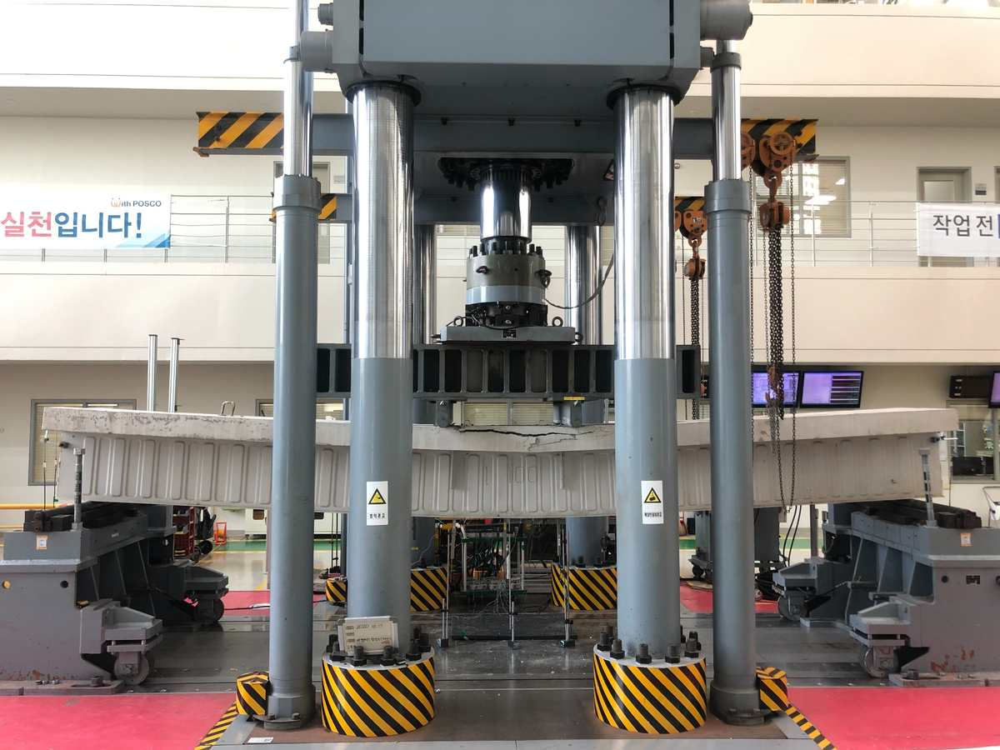

SCS LAB · DONG-EUI UNIVERSITY · BUSAN
Engineering
structures for
a resilient
future.
Steel & Composite Structures Laboratory. 강구조·합성구조의 거동을 실험과 비선형 수치해석으로 분석하고, 구조물의 안전성과 회복력을 높이는 기술을 연구합니다.

STRUCTURAL TESTING / EXPERIMENT & ANALYSISSTEEL & COMPOSITE STRUCTURES LABORATORYOUR RESEARCH FOCUS
01Steel Structures
02Composite Systems
03Resilience & AI
WHAT WE DO
From fundamental mechanics
to real-world structures.
재료 및 부재 수준의 실험, 비선형 유한요소해석, 데이터 기반 기술을 융합하여 구조 성능을 평가하고 개선합니다.
OUR APPROACH
Experiment. Simulation.
Structural insight.
하나의 구조적 문제를 실험, 유한요소해석, 데이터 기반 분석으로 다각도에서 검토합니다.
01 / TEST
Structural experiments
부재·접합부의 하중–변형 관계, 파괴 양상과 구조성능을 검토합니다.
02 / MODEL
Nonlinear analysis
유한요소해석으로 좌굴, 비선형 거동과 구조적 한계상태를 분석합니다.
03 / EVALUATE
Performance evaluation
실험·해석 결과를 비교해 설계 및 보강의 적용 가능성을 검토합니다.

LABORATORY DIRECTORLEADERSHIP / 01
MEET THE DIRECTOR
Research driven
by structural
understanding.
이준섭 교수는 강구조 및 합성구조 시스템의 구조성능, 접합부 개발, 화재·내진 성능, 영상 기반 구조물 상태평가 등을 연구합니다.
POSITIONAssistant Professor · Dong-Eui University
DEPARTMENTArchitectural Engineering
EDUCATIONPh.D. · Kyungpook National University (2022)
LABORATORYEngineering Building, Room 625
OUR PHILOSOPHY
We connect mechanics, experiments, and computation to create safer structural systems.
SELECTED PUBLICATIONS
Research in focus.
ALL PUBLICATIONS →아래는 대표 학술지 논문의 정식 제목입니다. 전체 논문 목록과 연구성과는 Publications 페이지에서 확인하세요.
2025JOURNAL ARTICLE
Experimental, numerical, and analytical investigation of U-shaped steel composite beams
Journal of Building Engineering · DOI ↗
2025JOURNAL ARTICLE
Comparative study of CNN-based deep learning models for concrete crack detection
Journal of Building Engineering · DOI ↗
2025JOURNAL ARTICLE
Strength Evaluation of Inserted Bolt-type Shear Connectors for Use in Small CFTs
Structures · DOI ↗
IN THE LAB